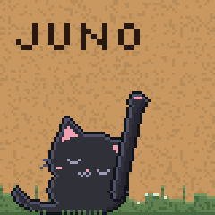

Modular Compagnon by Alexis Arakis, Bungle Society.
Felucca by Leo Kuroshita (@kurogedelic), Hügelton Instruments.
Font: Silkscreen (SIL OFL 1.1). The package holds three JieLi AC79 SDK files (Apache-2.0).
M-VAVE and SMK-37 are trademarks of their respective owners.
github.com/bunglesociety/modular-compagnon